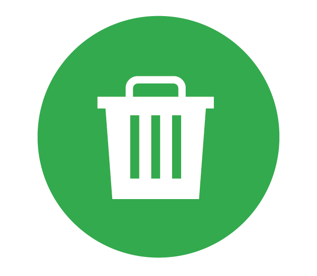
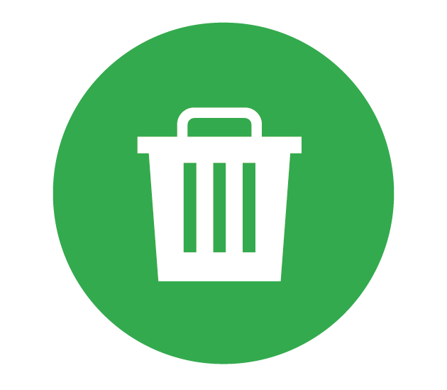
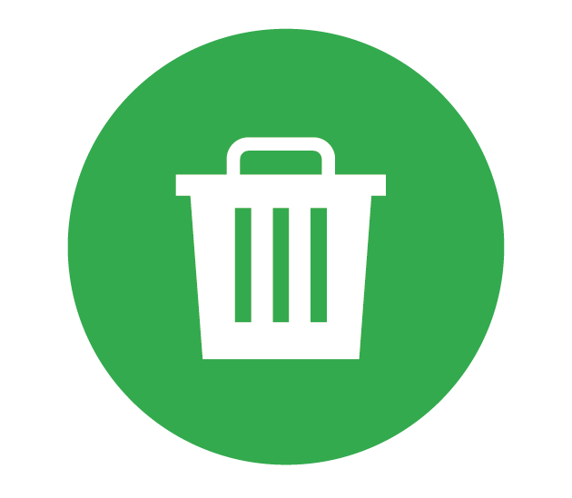

Tra indovinelli, rebus, giochi di parole e di logica e vignette divertenti, questo percorso racconta come può essere virtuosa la gestione dei servizi idrici, ambientali ed energetici e quale contributo può dare il cittadino, seguendo semplici regole per un consumo responsabile.
Buon divertimento!

 
